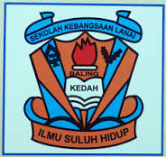

My Education
| Level | School/Institution | Year | Description |
|---|---|---|---|
| Primary School |
SK Lanai  |
2011 - 2016 | My primary school is SK Lanai. This is where my learning journey began. During my time there, I learned many important skills such as reading, writing, and mathematics. These skills helped me in my daily life and prepared me for the next level of my education. I also started to discover the subjects that I enjoyed the most. The teachers were kind and always ready to guide me whenever I needed help. |
| Secondary School |
SMK Parit Panjang |
2017 - 2021 | After finishing my primary school, I continued my studies at SMK Parit Panjang. Studying here was a new chapter in my life. I learned many new subjects such as Science, Mathematics, History, and English. These subjects helped me to gain more knowledge and understand the world better. I also worked hard to improve my reading, writing, and speaking skills. During my time at this school, I joined many activities like sports, school clubs, and competitions. |
| Diploma |
UiTM Kedah |
2023 - Present | After I completed my secondary school, I continued my studies at UiTM Merbok. This was an important step in my education because I was now learning at a higher level. I took the course in Library Informatics, where I learned many new things about libraries, information, and how to manage resources. This course helped me to gain more knowledge and skills that are useful for my future. I also improved in areas like communication, teamwork, and leadership. The lecturers were always kind, helpful, and ready to guide me when I needed help. Besides studying, I also joined many activities such as programs, events, and group work. |